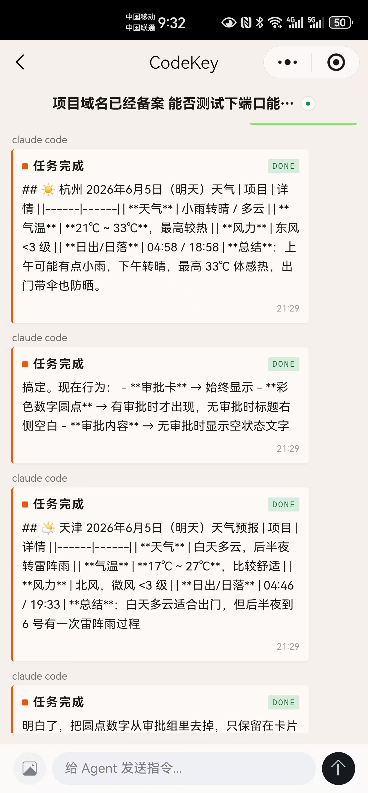
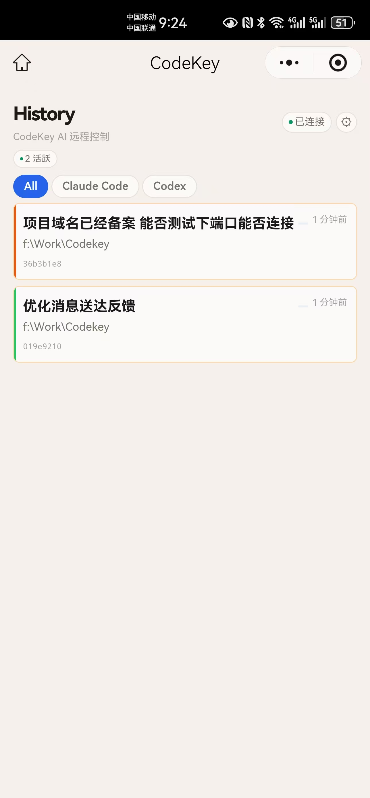

CodeKey
Approve, monitor, and continue Claude Code, Codex, and OpenCode from your phone. Your desktop agent keeps working, while history sharing and privacy rules stay under your control.
在手机上审批、查看和接续 Claude Code、Codex、OpenCode。 桌面端继续执行，历史同步和隐私策略都由你控制。


Keep your agent moving, even away from your desk
离开电脑，也不用让 agent 停在那里等你
CodeKey moves AI coding approvals and follow-up prompts to your phone: approve commands, answer questions, watch progress, and send the next prompt remotely.
CodeKey 把 AI coding agent 的等待点搬到手机上： 你可以审批命令、回复问题、查看任务进度，也可以主动发送下一条 prompt。
Permission requests appear on mobile with approve, deny, and reply actions.
权限请求实时推送到手机端，支持批准、拒绝和文字回复。
Type from mobile and your local VS Code agent continues the task.
在手机上输入新指令，VS Code 里的本地 agent 会继续执行当前工作流。
Track local sessions by Claude Code, Codex, and OpenCode.
按 Claude Code、Codex、OpenCode 分类查看本地会话和任务状态。
Pair devices, inspect status, manage sync, and handle approval cards in one place.
配对、连接状态、同步开关、本地会话和审批卡集中在一个控制台里。
Works with WeChat Mini Program and Telegram Mini App.
支持微信小程序和 Telegram Mini App，适合国内外不同使用环境。
History policies and agent state updates apply without restarting the workspace.
历史同步策略和 agent 状态变化即时应用，不需要重启工作区。
Privacy is a product feature, not a slogan
隐私保护是产品能力，不是标语
Remote control requires relay forwarding, but CodeKey projects, sanitizes, and blocks events locally first. You can turn history off entirely or share safe summaries only.
远程控制需要 relay 转发消息，但 CodeKey 在本机先做策略判断、脱敏和拦截。 你可以关闭历史同步，也可以只同步安全摘要。
| Policy | 策略 | What mobile can see | 手机端看到什么 |
|---|---|---|---|
| Off | Approval cards only. No session history. | 只同步审批卡，不同步会话历史。 | |
| Summary | Safe status summaries without raw prompt or output text. | 同步安全摘要和状态，不带原始 prompt 或 agent 输出。 | |
| Full | Full session history, still filtered by local secret scanning and blocklists. | 同步完整会话内容，但仍经过本机 secret scanning 和 blocklist。 |
- Secret scanning redacts API keys, tokens, passwords, and similar values locally.
- Blocklist / .codekeyignore prevents selected files and paths from being forwarded.
- Field projection keeps Summary mode limited to safe event type, state, and summary fields.
- Audit panel shows forwarded, blocked, and sanitized event counts in the sidebar.
- Per-agent policy lets Claude Code, Codex, and OpenCode use different history modes.
- Secret scanning：API key、token、password 等敏感字段先脱敏。
- Blocklist / .codekeyignore：指定路径和文件不会被转发。
- Field projection：Summary 模式只保留类型、状态和安全摘要。
- Audit panel：侧栏展示 forwarded、blocked、sanitized 的统计和原因。
- Per-agent policy：每个 agent 可独立设置历史同步模式。
Screenshots
截图说明
The core workflow lives in three places: the VS Code sidebar, the mobile session list, and the mobile session detail view.
安装后你主要会接触三个界面：VS Code 侧栏、手机会话列表、手机会话详情。

Start in 5 steps
5 步开始
Keep your existing agent workflow. CodeKey only moves approvals and monitoring to your phone.
安装扩展后，不需要改变原来的 agent 使用方式，只是把审批和查看搬到手机上。
- Install the CodeKey VS Code extension.
- Open the CodeKey view from the Activity Bar.
- Click Pair Device and scan the QR code with WeChat or Telegram.
- Start Claude Code, Codex, or OpenCode.
- Approve, monitor, and send prompts from your phone.
- 安装 CodeKey VS Code 扩展。
- 打开 Activity Bar 中的 CodeKey 侧栏。
- 点击 Pair Device，用微信或 Telegram 扫码配对。
- 启动 Claude Code、Codex 或 OpenCode。
- 在手机上审批、查看进度、继续发送 prompt。